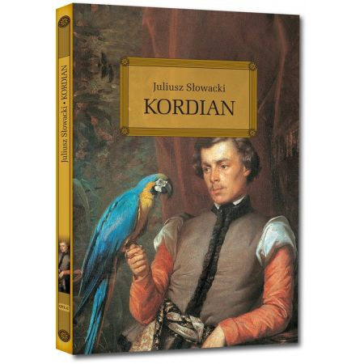
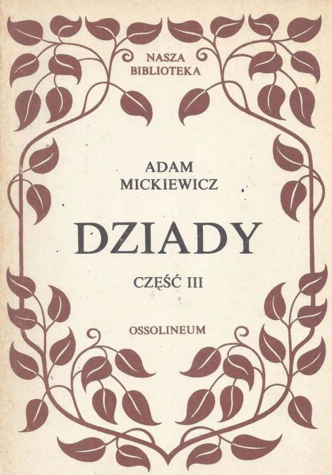

Pan Tadeusz, czyli Ostatni zajazd na Litwie – poemat epicki Adama Mickiewicza wydany w dwóch tomach w 1834 w Paryżu przez Aleksandra Jełowickiego. Ta epopeja narodowa (z elementami gawędy szlacheckiej) powstała w latach 1832–1834 w Paryżu. Składa się z dwunastu ksiąg pisanych wierszem, trzynastozgłoskowym aleksandrynem polskim. Czas akcji: pięć dni z roku 1811 i jeden dzień z roku 1812. Epopeja jest stałą pozycją na polskiej liście lektur szkolnych.
Kordian – dramat romantyczny autorstwa Juliusza Słowackiego. Utwór napisany został w Genewie w 1833, ukazał się anonimowo w Paryżu w 1834.
Dziady część III – utwór dramatyczny Adama Mickiewicza należący do cyklu dramatów Dziady. Utwór powstawał w roku 1832 w Dreźnie. Opublikowany został po raz pierwszy w 1832 roku jako IV tom Poezji (w wydaniu zbiorowym), oraz rok później w edycji osobnej. Utwór niekiedy określany mianem Dziady drezdeńskie, ze względu na miejsce powstania.
Źródło Źródło